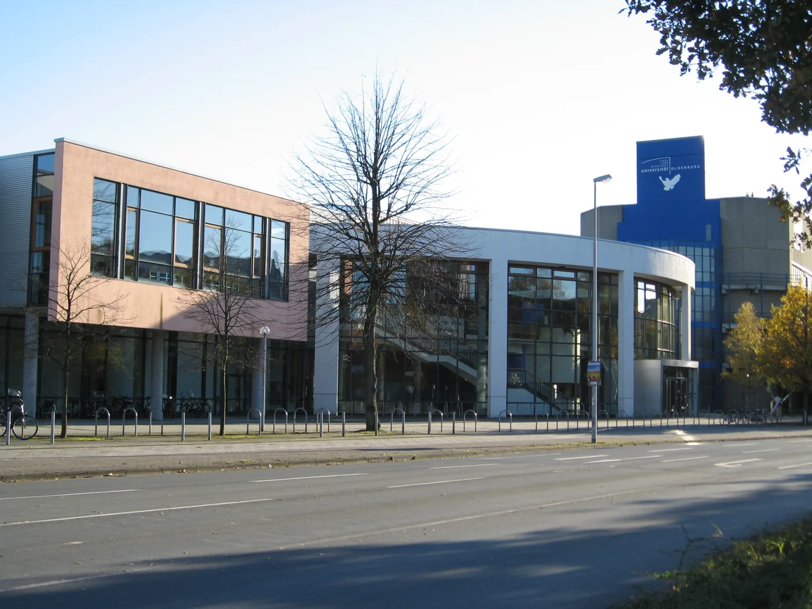

ドイツの大学を含む複数国で学び、修士号を目指す制度です。日本人も応募できます。
制度全体の応募資格、必要書類、選考実績、日本からの採用統計とグラフは、 共通詳細ガイド をご覧ください。本ページはドイツの課程選びとDAADの比較を中心にしています。

ドイツの奨学金と併用できる？
ドイツ学術交流会の全額奨学金との同時受給はできません。 一部例外のある支援も、両方の事務局への確認が必要です。併願と併給は分けて考えましょう。
DAADとの違い・公式出典
| 比較項目 | EMJM奨学金 | DAAD奨学金 |
|---|---|---|
| 支援の単位 | 共同修士課程の学生を選考 | 修士・研究・専門分野等、個別の募集 |
| 滞在・移動 | 複数国にまたがる所定の経路 | 選んだ募集・大学の条件に従う。FAQでは原則ドイツ居住が必要 |
| 応募先 | 各コンソーシアムのポータル | 各DAAD募集の指定システム・提出先 |
| 学費・生活費 | 現行月€1,400、奨学生の授業料・必須参加費免除 | 給付額・学費の扱い・期間は募集ごと |
| 選ぶとき | 複数大学を回って学びたい専門課程があるか | ドイツで希望する大学・研究計画が対象か |
DAAD公式FAQ A13ではErasmus奨学金と全額DAAD奨学金は併給できません。一部の短期講座・部分奨学金には例外がありますが、それをEMJMにも自動的に適用してはいけません。同時応募と同時受給を分け、採用通知を受けた段階で期間・金額・費目を双方に伝え、受諾前に条件を確定します。
何を学べる？
専攻から選び、必要な条件を開いて確認してください。2027年募集が未確定の課程も含みます。
高等教育・研究・イノベーション（MARIHE）
- 期間・学位
- 2年・120 ECTS／修士（学位構成は専門経路と契約で確認）
- 参加大学・国
- University for Continuing Education Krems（AT）、Tampere University（FI）、Osnabrück University of Applied Sciences（DE）、ELTE（HU）、University of Aveiro（PT）、Beijing Normal University（CN）、Thapar Institute of Engineering and Technology（IN）
- 学歴・英語
- 学士180 ECTS相当、専攻不問。IELTS6.5／各5.5。職歴必須ではない。
- 2027募集
- 2027奨学金選考あり。第1段階2026/9/21終了。次の動画締切は新規募集ではありません。
移民・異文化関係（EMMIR）
- 期間・学位
- 2年・120 ECTS／7大学が共同授与するMigration and Intercultural Relationsの修士共同学位
- 参加大学・国
- University of Oldenburg（DE）、University of Stavanger（NO）、University of Ghana（GH）、Mbarara University of Science and Technology（UG）、University of Nova Gorica（SI）、Charles University（CZ）、University of the Witwatersrand（ZA）、Mahanirban Calcutta Research Group（IN）。研究機関1を含む8機関、学位授与は7大学。
- 学歴・英語
- 関連学士、C+相当以上。現行要件ページの語学表はIELTS6.5／TOEFL iBT88（旧尺度）。表には2022年表記があるため、2027に適用される証明・尺度は事務局へ再確認。既修士は再進学理由の説明が必要。
- 2027募集
- 2027–29受付中。奨学金・授業料不要自費枠：2026/12/20 23:59 CET。奨学金候補は締切までに学士課程修了。
欧州の社会・政治・文化（Euroculture）
- 期間・学位
- 2年・120 ECTS／修士。授与形態は経路別
- 参加大学・国
- Göttingen（DE）、Groningen（NL）、Udine（IT）、Strasbourg（FR）、Palacký University Olomouc（CZ）、Jagiellonian University Kraków（PL）、Uppsala（SE）。研究滞在等の追加提携先とは区別。
- 学歴・英語
- 人文・社会系学士。IELTS6.5／全技能6.5。奨学金希望者は締切時の卒業条件を確認。
- 2027募集
- 2027奨学金：2026/10/15〜2027/1/15。結果は2027年3月末予定。
地質資源工学（EMerald）
- 期間・学位
- 2年・120 ECTS／修士。複数学位の詳細は経路別
- 参加大学・国
- University of Liège（BE）、University of Lorraine（FR）、Luleå University of Technology（SE）、TU Bergakademie Freiberg（DE）
- 学歴・英語
- 地球科学・鉱業・工学等の関連学士。IELTS6.5／TOEFL87（受験日・新尺度は再確認）。
- 2027募集
- 2027奨学金：2026/11/3〜2027/2/28。上位40人面接、最終決定2027/4/16予定。
地図・地理情報（Cartography）
- 期間・学位
- 4学期／4大学の共同学位MSc in Cartography
- 参加大学・国
- Technical University of Munich・TU Dresden（DE）、TU Wien（AT）、University of Twente（NL）
- 学歴・英語
- 関連学士。日本の学士はuni-assist VPDの案内も確認。現行入学要件はIELTS Academic6.5／TOEFL iBT88（旧尺度）／PTE65、英語教授言語証明で免除可。2027の奨学金要項・新TOEFL尺度対応は最新公募で再確認。
- 2027募集
- 2026募集終了。2027の確定出願期間・奨学金募集は今回未確認。
洪水リスク管理（Flood Risk Management）
- 期間・学位
- 2年・120 ECTS／水・水工学・洪水リスク管理のMSc（複数学位、詳細は公式学位一覧）。単一のDiploma Supplement
- 参加大学・国
- TU Dresden（DE）、IHE Delft Institute for Water Education（NL）、Universitat Politècnica de Catalunya（ES）、University of Ljubljana（SI）
- 学歴・英語
- 土木・水・環境等の関連学士。リンク先IHE Delftのjoint MSc基準はIELTS6.0（Writing6.0）／TOEFL iBT80（Writing17、旧尺度）。2027の提出期限・尺度は事務局へ確認（公式ページに旧年表記が混在）。
- 2027募集
- 2027：Partner Countries 1/3 23:59 CET、Programme Countries 2/7。約14のEM奨学金予定はEC承認条件付き。公式の国籍区分を確認。
ドイツの大学が参加していても、移動経路を先に確認
学位を授与する正式パートナーと、研究・実習だけの関連パートナーは異なります。希望するドイツの大学で何学期学べるか、その経路を選べる条件、次の国のビザ・住居・保険を確認してください。Cartographyではドイツ・オーストリア・オランダ、EMeraldではベルギー・フランス・スウェーデン・ドイツにまたがる大学構成です。
- 必修科目と学士の履修が合うかを確認
- 2027奨学金枠・卒業時期・英語条件を確認
- ドイツを含む学修経路と学位を確認
- 推薦・英文証明・uni-assist等の追加手続きを確認
- 給付受諾、各国のビザ・住居・初期費用を準備
出典： EACEA：Erasmus Mundus Catalogue ↗ ／ Cartography：課程と大学 ↗ ／ EMerald：2027出願・選考 ↗
IELTSと日本の学士：特に気をつける例
EurocultureはIELTS総合6.5だけでなく全技能6.5を求めます。MARIHEは総合6.5・各5.5ですが、日本で取得した英語学位だけでは指定国による免除に該当しません。EMMIR奨学金候補は締切時点で学士課程修了が必要です。日本の3月卒業予定者は「開始前卒業なら全課程で可」と思い込まないでください。
TOEFLは2026年の尺度変更を含めて受験日・受理基準を確認します。Cartographyの日本学位に対するVPD（学位の事前審査）等、翻訳・認証・成績尺度の準備も見込みます。
出典： Euroculture：2027出願・語学条件 ↗ ／ MARIHE：入学・英語要件 ↗ ／ EMMIR：2027出願・書類・締切 ↗ ／ Cartography：出願・適性選考 ↗
必要書類・志望理由の詳細を見る倍率と日本からの採用実績は共通ガイドへ
公式EU資料の最新系列では、日本からのEM奨学金採用は2021〜2025年に28人、2025年は5人です。ドイツ課程だけの人数でも、現在の日本人受給者数でもありません。日本人だけの合格率は今回確認できませんでした。
SECCLO・IMIM・SUFONAMAの選考データと、入学許可・給付決定の違いは共通ガイドに整理しています。
出典： EU Japan 2025 factsheet（2026年3月掲載）p.2 ↗
3課程の選考実績 ／ 日本からの採用実績グラフドイツの大学選び・生活を相談する
相談できる内容を確認して、現役生を選べます。
現役生のプロフィールを見るErasmus Mundus採用経験者への相談を保証するものではありません。
公式資料・写真の出典
確認日：2026年10月17日。2027未確定情報は、募集要項が公開された時点で更新します。EU・大学の公認／提携記事ではありません。
- Erasmus+ Programme Guide 2026：EMJM ↗
- 欧州委員会：学生向けEMJM案内 ↗
- EACEA：Erasmus Mundus Catalogue ↗
- EU Japan 2025 factsheet（2026年3月掲載）p.2 ↗
- EU Japan 2024 factsheet（旧版の公開内容。旧URLは現在404のため、現行値は最新版を参照）
- ECB：円参考為替（2026年10月16日） ↗
- SH Operational Regulations（2026年8月31日施行） ↗
- SH 2026/27募集要項 ↗
- DAAD：奨学金FAQ A13 ↗
- JASSO：大学院学位取得型・併給条件 ↗
- JASSO：2027年度大学院学位取得型募集 ↗
- CWAJ：2027 SA募集条件 ↗
- Mundus MAPP：資金援助・併給・費用 ↗
- MARIHE：2027選考日程 ↗
- MARIHE：入学・英語要件 ↗
- MARIHE：現行評価基準 ↗
- MARIHE：2025–28参加大学 ↗
- IPCVai：2027出願期間・条件 ↗
- IPCVai：学期別の学修先 ↗
- IPCVai：費用と奨学金 ↗
- DAFM：公式募集日程・実績 ↗
- MATE：Danube AgriFood Master ↗
- EMMIR：2027出願・書類・締切 ↗
- EMMIR：学歴・語学要件 ↗
- Euroculture：2027出願・語学条件 ↗
- EMerald：2027出願・選考 ↗
- Cartography：出願・適性選考 ↗
- Cartography：課程と大学 ↗
- Flood Risk Management：出願・助成条件 ↗
- EDISS：2027–29の3募集区分 ↗
- SECCLO：年度別選考結果 ↗
- IMIM：2025奨学金採用結果 ↗
- SUFONAMA：2025入学統計 ↗